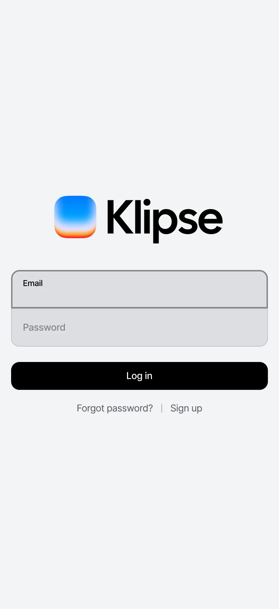
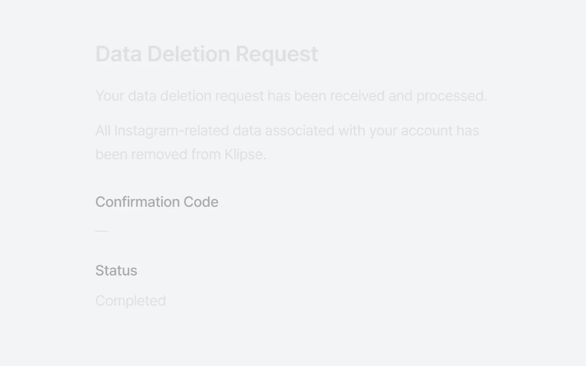

Klipse 디자인 시스템
Klipse 디자인 시스템
LOUIS Figma 화면 보드 9월 운영 보고
제품에서 잰 값으로 그린 보드를 54장에서 76장으로 늘렸다. 남은 손 조립 보드 49장은 대부분 서버가 로그인을 확인하는 화면이라, 서버가 받는 가짜 세션을 만들지 정해야 한다.
승인과 확인이 필요한 사항
-
서버가 받는 가짜 세션으로 남은 앱 화면 측정 착수
허브 화면과 캔버스 · 비디오 편집기, 어드민이 대상이다. 제품 저장소는 읽기만 하고 로컬 인증 서버를 따로 세운다
-
데이터 삭제 상태 화면의 글자 대비 수정 요청
라이트 테마에서 본문 대비가 1.2:1 이다. 제품 저장소에 바탕 또는 토큰 색을 적용하는 PR 을 올린다
-
제품 기준 커밋을 올리는 시점
제품 design 브랜치가 측정 기준보다 122커밋 앞서 있다. 올리면 측정 원장 두 벌과 보드 76장을 다시 만든다
요약
잰 값으로 그리고 라이브와 대조하는 흐름을 인증 화면까지 넓혔다
9월 26일에 Figma 디자인을 한 건씩 손으로 그리지 않고, 제품을 잰 원장에서 생성기로 묶어 그리기로 정했다. 이번 달에는 그 흐름을 로그인 전 화면에 적용했다. 로그인하지 않은 상태로 인증 화면 아홉과 404, 데이터 삭제 상태 화면을 두 뷰포트로 재고, 손으로 조립했던 보드 22장을 측정 생성본으로 바꿨다.
보드를 보낸 뒤 캡처로 확인하는 단계에서 생성기 결함 여섯을 찾았다. 여섯 모두 검사 게이트가 통과한 상태에서 나왔고, 고친 방법은 조립 규칙 문서에 조항으로 남겼다.3
- 제품 측정
- 생성기
- Figma 전송
- 캡처와 라이브 대조
- 규칙으로 기록
-
로그아웃 측정 원장
인증 우회를 끈 측정으로 22화면을 쟀다. 다른 화면으로 넘어간 화면은 하나도 없다
-
생성기 결함 수정
빈 보드부터 입력칸 눌림까지 여섯을 고쳤다. 기존 보드 54장의 그림은 그대로다
-
제품 결함 발견
손 조립 보드가 가리고 있던 대비 결함이 측정 보드에서 드러났다
01
보드 125장 중 76장이 제품에서 잰 값으로 그려진다
2026년 9월 28일 기준, 보드 구성 원장과 Figma 라이브 대조, 최종 게이트 요약
측정 생성 보드
76장
+22 9월 26일 대비
손 조립 보드
49장
−22 9월 26일 대비
컴포넌트 인스턴스
224개
후보 319개 중 70.2%
통과한 게이트
55개
실패 1개는 알려진 증거 잠금 낙후
- 측정 생성 76장 61%
- 손 조립 49장 39%
- 9월 2일 36장
- 9월 26일 54장
- 9월 28일 76장
9월 2일부터 36장에 머물다가 9월 26일 18장, 9월 28일 22장이 더해졌다. 28일은 로그아웃 측정 원장이 선 날이다1
- 9월 2일 78개
- 9월 5일 76개
- 9월 11일 84개
- 9월 14일 101개
- 9월 25일 101개
- 9월 26일 206개
- 9월 28일 224개
9월 26일 하루에 101개에서 206개로 늘었다. 보드 생성기가 제품 부품 세트를 찍기 시작한 날이다
| 페이지 | 보드 | 측정 생성 | 손 조립 | 측정 생성 비율 |
|---|---|---|---|---|
| 01 공개 | 20 | 2 | 18 | 10% |
| 02 인증 | 18 | 18 | 0 | 100% |
| 03 앱 | 38 | 22 | 16 | 58% |
| 04 결제 | 34 | 32 | 2 | 94% |
| 05 운영 | 13 | 2 | 11 | 15% |
| 99 보류 | 2 | 0 | 2 | 0% |
| 합계 | 125 | 76 | 49 | 61% |
해석
인증 페이지는 보드 18장이 모두 측정 생성본이 됐다.2 결제 페이지도 34장 중 32장이다. 남은 손 조립 49장 중 앱 페이지의 16장은 서버 컴포넌트가 로그인을 확인해, 지금 측정으로 열면 랜딩으로 넘어간다. 인증 우회는 브라우저 쪽이라 서버 확인을 넘지 못한다.
02
생성기는 검사가 초록인 채 틀린 보드를 냈다
로그인 보드 두 장을 먼저 보내 캡처로 본 뒤 22장으로 넓혔다
결함은 모두 보낸 보드를 캡처로 볼 때 드러났다. 생성기는 오류 없이 끝났고 보드 수와 크기도 맞았다. 수치 대조만으로는 보이지 않는 결함이라, 보낸 뒤 캡처로 보는 단계를 흐름에서 빼지 않는다.
제품
보드

기준 커밋 2c6bdacf 의 로그인 화면을 402×874 로 연 캡처와, 그 화면을 재서 생성한 보드다. 보드는 9월 29일 grid 칸의 여백과 입력칸 포커스 테두리를 고친 판이다 — 그 전에는 로고와 입력칸 사이가 제품보다 24 좁았고, 제품이 이메일 칸에 건 포커스 테두리가 2px 이 아니라 1px 이었다
라이브 대조는 두 단계다. 대조기가 페이지마다 읽기 전용 탐침을 뽑으면 Figma 에서 그 탐침을 돌리고, 돌려받은 결과를 --check 로 계획과 맞댄다. 결과는 손으로 옮기지 않고 세션 기록에서 꺼낸다.
node scripts/figma-screens-live-check.mjs --emit --page 246:3448 --quiet > probe-02.js
node scripts/figma-screens-live-check.mjs --check live-246-3448.json --allow-partial-
가지째 빠진 모바일 본문
상자 없는 래퍼 아래 노드를 버려 모바일 8장이 23노드 중 3만 남았다. 이제 부모를 못 찾으면 생성기가 멈춘다
-
접힌 grid 행
화면 높이로 늘어난 행을 내용 높이로 깔아 카드가 위에 붙고 브랜드 패널이 1040에서 420으로 접혔다
-
빈 상자가 된 로고
이미지 파일을 그릴 길이 없었다. 파일 경로를 자산 컴포넌트에 이어 인스턴스로 넣는다
-
칸 왼쪽에 붙은 로고
칸 안 가운데 정렬이 측정 축에 없어 좌표로 판정한다. 모바일 로고가 x 16에서 78로 섰다
-
꺾인 제목과 라벨
폭을 측정값으로 굳힌 한 줄 글자가 Figma 글꼴에서 줄을 바꿨다. 한 줄 글자는 글자 폭을 따른다
-
눌린 입력칸
칠이 없는 입력 요소를 빈 껍데기로 버려 입력칸 58이 패딩 높이로 눌렸다. 입력 요소는 측정 크기로 남긴다
기존 보드 54장은 한 장도 다시 그리지 않았다
결함을 고칠 때마다 기존 보드의 생성 결과를 앞 커밋과 대조했다. 바뀐 것은 인증 화면 보드와 수량 스테퍼 부품뿐이고, 설정 화면은 전송 조각의 개수만 늘었다.
03
측정 보드가 제품의 대비 결함을 드러냈다
라이트 테마 측정, WCAG 대비 계산
바탕 없이 글자색만 밝은 회색으로 고정했다
페이지가 글자를 인라인 색으로 칠하고 바탕을 두지 않아, 라이트 테마의 밝은 면 위에서 글자가 거의 보이지 않는다. 손 조립 보드는 다크 면으로 그려 이 결함을 가리고 있었다. 보드는 제품대로 두고 프레임 이름에 적었다.

- 제목 · 본문 · 값 — 글자 #e0e0e0 이 바탕 #f2f3f5 위에 1.2:1 로 선다
- 확인 코드 · 상태 라벨 — 글자 #aaa, 2.1:1
| 화면 | 자리 | 대비 | 상태 |
|---|---|---|---|
| 데이터 삭제 상태 | 본문 글자와 라벨 | 1.2:1 | 새로 찾음 수정 요청 |
| 업그레이드 요금제 비교표 | 다크 카드 위 표 본문 | 1.42:1 | 알려진 결함 제품 작업 때 함께 수정 |
04
남은 손 조립 보드는 잴 길이 저마다 다르다
남은 49장은 측정 세션에 따라 갈린다. 로그인 상태 측정은 보호된 앱 화면을, 로그아웃 측정은 인증 화면과 짧은 공개 화면을 잰다. 서버가 로그인을 직접 확인하는 화면은 두 측정 모두 닿지 않는다.
서버가 로그인 확인
허브 화면, 캔버스 · 비디오 편집기, 어드민. 서버가 받는 가짜 세션이 있어야 잰다
긴 공개 페이지
랜딩, 요금, 약관, 블로그 목록. 뷰포트 밖까지 재는 전체 페이지 측정이 맡는다
데이터가 있어야 나오는 화면
하이라이트 결과, 템플릿 · 블로그 상세. 시드 데이터가 필요하다
오류 경계
오류 화면 둘. 오류를 일으켜야 열려 측정 길이 아직 없다
05
다음은 서버 세션, 그다음이 기준 커밋 상향이다
-
9/26
Figma 먼저, 생성기로 묶어서
제품 전용 부품을 Figma 제품 컴포넌트로 세우고 원장에서 묶어 생성하기로 결정
-
9/28
로그인 전 화면 보드 22장 교체
로그아웃 측정 원장, 생성기 결함 여섯 수정, 라이브 대조 22장 일치
-
다음
서버가 받는 가짜 세션
로컬 인증 서버와 시드 데이터로 허브 · 편집기 · 어드민을 재고 보드를 생성
-
그다음
제품 기준 커밋 상향
최신 design 브랜치로 원장 두 벌을 다시 재고 보드 전부를 다시 생성
기준 커밋 상향은 한 번 시작하면 보드 전부를 다시 보내야 한다
원장 두 벌을 다시 재고 보드 76장과 제품 부품을 다시 생성해 보낸다. 설정 화면의 여백 값이 측정마다 흔들리는 문제를 먼저 고치지 않으면 새 기준이 그 흔들림을 그대로 굳힌다.
부록
이 보고서를 쓰며 문서 부품이 모자란 자리
문서 레시피 고도화의 입력. 9월 28일에 부품 선택표를 모두 쓴 뒤 적었고, 9월 29일에 전부 부품으로 세웠다
| 쓰고 싶었던 것 | 처음 대신한 것 | 세운 부품 |
|---|---|---|
| 날짜별 추이 | 두 시점 막대 비교 | 추이 — 선과 계단(01절) |
| 보드 캡처 전후 | 글로 된 설명 | 캡처와 나란히 보기(02 · 03절) |
| 부분과 전체 | 표의 비율 열 | 누적 막대(01절) |
| 표 안의 판정 | 상태를 글로 적은 열 | 표 칸 안의 알약(03절) |
| 캡처 위 짚기 | 캡션에 자리를 글로 적었다 | 캡처 위 번호 핀과 설명 목록(03절) |
| 근거 번호 | 절 머리의 출처 줄 | 각주와 문서 끝 출처 목록 |
| 긴 문서의 길잡이 | 절 키커 번호 | 목차와 절 앵커(문서 머리) |
| 파일 경로와 명령 | 경로를 본문에서 뺐다 | 코드 표기와 코드 블록(02절 · 출처) |
| 인용 | 카드 | 인용 블록(이 절) |
「문서 속 표 스타일이 루이에 정의된 스타일 맞아?」
지금
부록이 적은 부품 아홉은 9월 29일에 전부 문서 부품으로 세웠고 이 보고서가 쓴다. 앱 부품으로 대신하지 않고 문서 레시피 안에 문서 역할로 세웠다 — 첫 시안이 거절된 이유를 되풀이하지 않기 위해서다. 다음 문서를 쓰며 모자란 자리가 생기면 이 표에 더한다.
출처
- 1보드 구성 원장
migration/figma-board-composition.json— 9월 2일부터 28일까지 커밋 31개, 날마다 마지막 커밋의 값 본문으로 - 2Figma 라이브 대조
scripts/figma-screens-live-check.mjs— 보드 76장이 계획과 같다(9월 28일) 본문으로 - 3조립 규칙
design/governance/figma-screen-assembly.md24 · 26 · 28조 본문으로 - 4WCAG 2.2 대비 계산 — 글자 #e0e0e0 · 바탕 #f2f3f5, 본문 기준 4.5:1 본문으로